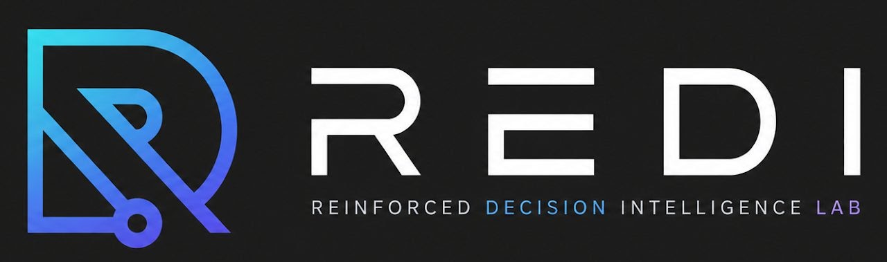

NeurIPS
Rethinking counterfactual reasoning in autonomous driving
Hayeon Oh and Donghwan Lee: Teaching VLMs What to Say, Not How to Reason.
KAIST · School of Electrical Engineering
Reliable reinforcement learning and learning-based control with mathematical guarantees for autonomous and industrial systems.
Donghwan Lee, Associate Professor · School of Electrical Engineering · KAIST
Learn more about our research through videos on our [lab’s YouTube channel]
From the lab
Recent research highlights · conference years shown
Hayeon Oh and Donghwan Lee: Teaching VLMs What to Say, Not How to Reason.
Donghwan Lee and Hyukjun Yang: Bellman Residual Minimization for Control: Geometry, Stationarity, and Convergence.
Min-Gyu Park, Samyeul Noh, Hyun Myung, and Donghwan Lee: Zero-Shot Visual Generalization via Latent-Space Consistency in Model-Based Reinforcement Learning.
Bum Geun Park and Donghwan Lee’s shared-network policy research appears at ICML 2026 as a spotlight paper.
How can learning systems make effective decisions while remaining stable, robust, and safe? Our lab develops reinforcement-learning and decision-making methods grounded in control theory, optimization, and applied mathematics. We study fundamental theory and translate it into algorithms for robotics, autonomous driving, energy, and industrial systems.

Foundations of Reinforcement Learning
We establish convergence, finite-time, and sample-complexity guarantees for Q-learning, temporal-difference learning, and related algorithms, including function approximation, distributed learning, and Markov games.
Safe and Robust Learning-Based Control
We design learning-based controllers that account for disturbances, model uncertainty, unsafe exploration, and stability requirements, with particular interest in Lyapunov and control-theoretic methods.
Autonomous and Industrial Intelligence
We collaborate on robotics, autonomous driving, GPU power management, and industrial process control, connecting theoretical insight with deployable systems.
ICML 2026 Spotlight
Adaptive Policy Backbone via Shared Network
A shared-network policy architecture for efficient adaptation across tasks.
[arxiv] [conference]
ICLR 2026
Analysis of Approximate Linear Programming Solution to Markov Decision Problem with Log Barrier Function
A theoretical foundation for solving linear-programming formulations of MDPs through log-barrier optimization.
[arxiv] [conference]
NeurIPS 2025
Pretraining a Shared Q-Network for Data-Efficient Offline Reinforcement Learning
A transition-predictive backbone that improves data efficiency across offline reinforcement-learning algorithms.
[arxiv] [conference]
NeurIPS 2024
Regularized Q-Learning
A regularized Q-learning method designed to stabilize learning with linear function approximation.
[arxiv] [conference] [video] [project]
IEEE TAC 2024
Final Iteration Convergence Bound of Q-Learning: Switching System Approach
Finite-time error bounds for the final iterate of Q-learning using a switching-system framework.
[arxiv] [journal] [video] [project]
IEEE T-RO 2025
Help Me Through: Imitation Learning Based Active View Planning to Avoid SLAM Tracking Failures
Imitation-learning-based view planning to reduce tracking failures over long routes.
[journal]
Collaborate with Us
We welcome academic and industrial collaborations in reinforcement learning, learning-based control, robotics, autonomous systems, and industrial AI. Our lab can contribute algorithm design, mathematical analysis, simulation, and joint validation on real platforms or operational data.
Projects & Collaboration
We build collaborations around clearly defined technical problems. Our goal is to connect rigorous reinforcement-learning and control methods with platforms, data, and operational needs from academic, public-sector, and industrial partners.
Algorithm Development
Reinforcement learning, offline RL, robust RL, safe learning, multi-agent learning, and learning-based control
Theory and Certification
Convergence, finite-time analysis, stability, robustness, Lyapunov methods, and control-theoretic interpretation.
Simulation and Evaluation
Problem formulation, benchmark design, simulation environments, baselines, ablation studies, and quantitative evaluation.
Application Integration
Adaptation to robotics, autonomous driving, industrial processes, energy systems, and computing infrastructure.
Collaboration Areas
Robotics, drones, and autonomous systems
Autonomous-driving perception, reasoning, and control
Industrial AI, process control, energy, and computing systems
Reliable reinforcement-learning algorithms and theory
Multi-agent decision making and coordination
Vision-language models for sequential decision making